Companion to the FPSO Console simulator · https://25im0024-lab.github.io/waled/fpso/ · English on the left, Arabic on the right; technical terms are kept in English in both.
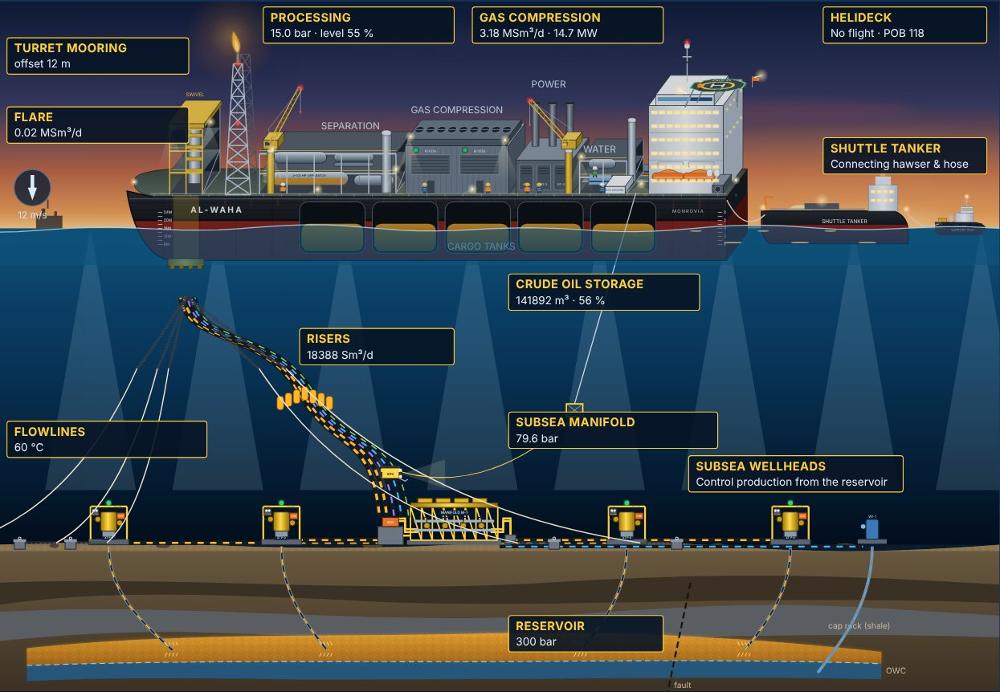
What this guide covers. Everything an engineer needs to understand an FPSO end to end: why the concept exists, the subsea system, flow assurance, risers, station keeping, the hull, every topsides process, utilities, storage and offloading, safety, people and logistics, and reservoir management. It also lists every equation used by the simulator, with the training scenarios and exercises.
Facts, typical values and model values. Physical principles and published standards are stated as facts, with references in section 19. Typical ranges describe common practice; real units vary. Model values are the simulator's training coefficients and are not data from a specific FPSO.
ماذا يغطي هذا الدليل. كل ما يحتاجه المهندس لفهم الـ FPSO من البداية إلى النهاية: لماذا وُجد هذا المفهوم، والنظام تحت البحر، وضمان الجريان (flow assurance)، والـ risers، والتثبيت في الموقع، والبدن، وكل عمليات المعالجة على السطح، والمرافق، والتخزين والتفريغ، والسلامة، والأفراد والإمداد، وإدارة المكمن. ويذكر أيضاً كل معادلة يستخدمها المحاكي، مع سيناريوهات التدريب والتمارين.
الحقائق والقيم النموذجية وقيم النموذج. المبادئ الفيزيائية والمعايير المنشورة تُذكر كحقائق، ومراجعها في القسم 19. القيم النموذجية تصف الممارسة الشائعة، والوحدات الحقيقية تختلف. أما قيم النموذج فهي معاملات تدريبية في المحاكي وليست بيانات وحدة FPSO محددة.
An FPSO (Floating Production, Storage and Offloading unit) is a ship-shaped floating installation moored above an offshore field. It does four things:
Gas is used as fuel or for gas lift. It is then exported by pipeline or reinjected into the reservoir.
The concept is generally traced to Shell's Castellón field offshore Spain (1977), which used a converted tanker. FPSOs are now the most widely used floating production concept, in fields such as the North Sea, Brazil, West Africa, Southeast Asia and Australia.
Why choose an FPSO?
Limitations.
الـ FPSO (وحدة إنتاج وتخزين وتفريغ عائمة) منشأة عائمة على شكل سفينة، مثبّتة فوق حقل بحري. تقوم بأربع مهام:
يُستخدم الغاز وقوداً أو للرفع بالغاز (gas lift)، ثم يُصدَّر بخط أنابيب أو يُعاد حقنه في المكمن.
يُنسب المفهوم عادةً إلى حقل Castellon التابع لـ Shell قبالة إسبانيا (1977)، الذي استخدم ناقلة محوّلة. والـ FPSO اليوم أكثر مفاهيم الإنتاج العائم انتشاراً، في مناطق مثل بحر الشمال والبرازيل وغرب أفريقيا وجنوب شرق آسيا وأستراليا.
لماذا تُختار الـ FPSO؟
القيود.
| Concept · المفهوم | Storage · التخزين | Typical water depth · العمق المعتاد | Trees · رؤوس الآبار | Motions · الحركة | ملاحظات |
|---|---|---|---|---|---|
| Fixed jacket | None (pipeline) | Up to ≈ 150–400 m | Dry | None | منصة ثابتة على قاعدة فولاذية؛ تحتاج خط تصدير. |
| TLP | None | ≈ 300–1,500 m | Dry | Very small heave | مثبّتة بأوتار مشدودة (tendons)؛ حركة رأسية ضئيلة. |
| Spar | Small or none | ≈ 500–3,000 m | Dry or wet | Small heave | أسطوانة عميقة الغاطس؛ تستعمل خط تصدير عادةً. |
| Semi-submersible | None | ≈ 100–3,000 m | Wet | Moderate | طوافات مغمورة وأعمدة؛ مساحة سطح محدودة. |
| FPSO | ≈ 1–2 MMbbl | ≈ 20 to > 2,500 m | Wet | Largest (ship) | تخزين وتفريغ ذاتي؛ مساحة سطح كبيرة؛ تدور مع الطقس. |
| FSO | Yes | Any | — | Ship | تخزين وتفريغ فقط، بلا معالجة. |
| FLNG | LNG / LPG | Deep | Wet | Ship | تسييل الغاز وتخزينه على متن الوحدة. |
Depth ranges are indicative of existing installations, not design limits.نطاقات العمق إرشادية من المنشآت القائمة، وليست حدود تصميم.
Subsea production system (API RP 17A gives the general requirements):
Every line enters the vessel through the turret. The swivel stack transfers fluids, power and signals across the rotating joint between the geostationary turret and the weathervaning hull.
نظام الإنتاج تحت البحر (يعطي API RP 17A المتطلبات العامة):
تدخل كل الخطوط إلى السفينة عبر الـ turret. وتنقل مجموعة الـ swivel الموائع والطاقة والإشارات عبر الوصلة الدوّارة بين الـ turret الثابت بالنسبة للأرض والبدن الذي يدور مع الطقس.
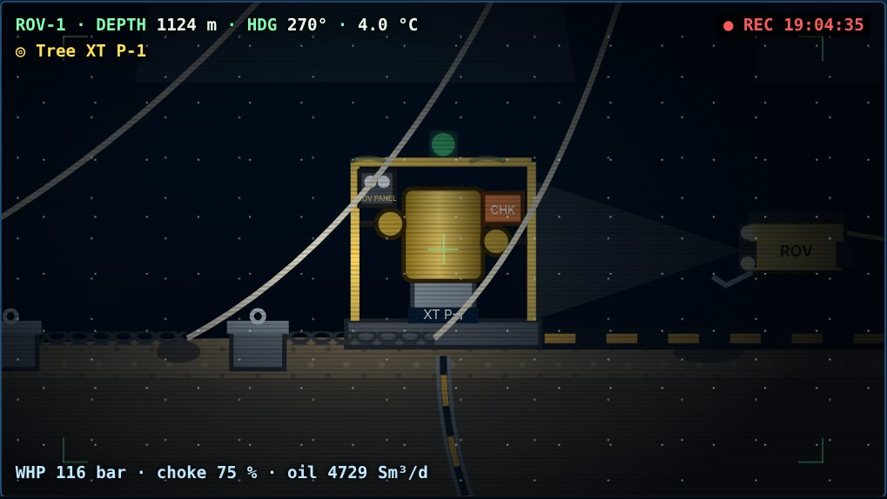
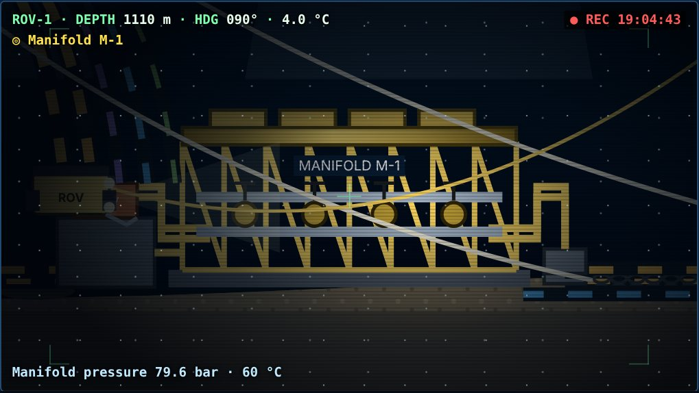
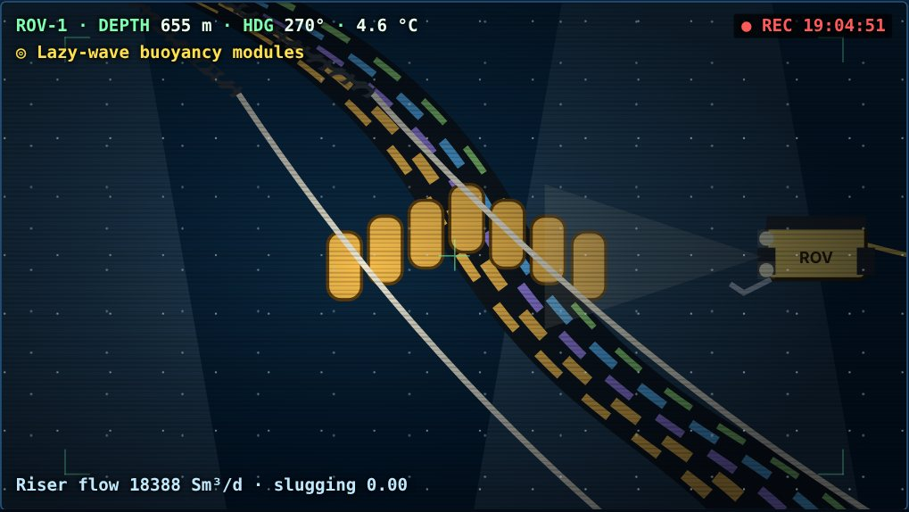
Inflow performance (IPR). The rate a well can deliver depends on the drawdown (Pr − Pwf).
Outflow and nodal analysis. From the bottom-hole to the wellhead, pressure falls by the hydrostatic head of the mixture and by friction. Gas lowers the mixture density (natural or injected gas lift). The well flows at the rate where inflow and outflow meet at the node.
Subsea choke. The choke adds the pressure drop between the wellhead and the manifold, and sets the rate. In the model the flow coefficient follows an equal-percentage-like trim.
Gas lift. Gas injected low in the tubing lightens the column, reducing Pwf and increasing drawdown. It is most useful for wells with high water cut or low reservoir pressure. Too much gas raises friction, so there is an optimum injection rate.
Water cut rises as the waterflood front reaches the producers (breakthrough). GOR rises when the reservoir pressure falls below Pb.
أداء التدفق من المكمن (IPR). المعدل الذي يعطيه البئر يعتمد على فرق الضغط (Pr − Pwf).
التدفق في الأنبوب والتحليل العُقدي (nodal analysis). من قاع البئر إلى رأسه ينخفض الضغط بمقدار عمود المزيج الهيدروستاتيكي والاحتكاك. والغاز يخفف كثافة المزيج (طبيعياً أو بالـ gas lift). يجري البئر بالمعدل الذي يتقاطع عنده منحنى التدفق من المكمن مع منحنى التدفق في الأنبوب عند العُقدة.
الـ choke تحت البحر. يضيف فرق الضغط بين رأس البئر والـ manifold، ويضبط المعدل. في النموذج يتبع معامل التدفق شكلاً قريباً من النسبة المتساوية (equal percentage).
الرفع بالغاز (gas lift). حقن الغاز في أسفل أنبوب الإنتاج يخفف العمود، فينخفض Pwf ويزداد فرق الضغط. هو مفيد خصوصاً للآبار عالية نسبة الماء أو منخفضة الضغط. لكن كثرة الغاز ترفع الاحتكاك، فهناك معدل حقن أمثل.
نسبة الماء ترتفع عندما تصل جبهة الماء المحقون إلى الآبار المنتجة (breakthrough). والـ GOR يرتفع عندما ينخفض ضغط المكمن تحت Pb.
Model wells P-1…P-4: J = 80, 62, 95, 45 Sm³/d/bar; TVD ≈ 1,800–1,900 m; initial water cut 4–48 %; GOR 140–230 Sm³/Sm³. These are training values.آبار النموذج P-1 إلى P-4: قيم تدريبية.
Flow assurance keeps the fluid moving from the reservoir to the vessel throughout field life, including shutdowns and restarts.
ΔT = K·W / (M·(100 − W)), where W is the inhibitor wt % in the aqueous phase and M its molar mass. K ≈ 1297 in °C units; verify the constant for the inhibitor used.Ve = C/√ρm, with C ≈ 100 for continuous service in ft/s and lb/ft³ units.ضمان الجريان هو إبقاء المائع يتحرك من المكمن إلى السفينة طوال عمر الحقل، بما في ذلك الإيقاف وإعادة التشغيل.
ΔT = K·W / (M·(100 − W))، حيث W النسبة الوزنية للمثبط في الطور المائي و M كتلته المولية. K ≈ 1297 بوحدات °C؛ تحقق من الثابت للمثبط المستخدم.Ve = C/√ρm، مع C ≈ 100 للخدمة المستمرة بوحدات ft/s و lb/ft³.Riser design checks include extreme loads and fatigue (wave and vortex-induced vibration), clashing with mooring lines, and the thermal and pressure ratings.
يتحقق تصميم الـ riser من الأحمال القصوى والتعب (من الأمواج والاهتزاز الناتج عن الدوامات VIV)، ومن التصادم مع خطوط التثبيت، ومن تصنيف الحرارة والضغط.
Turret mooring. The mooring lines and risers connect to a turret, a large cylinder carried on a main bearing in the hull. The turret stays fixed relative to the seabed while the ship rotates freely around it. The vessel weathervanes into the resultant of wind, waves and current, which minimises the environmental loads.
Spread mooring: the vessel is held at a fixed heading by mooring groups at bow and stern. It is used in benign, directional environments such as West Africa. Risers then connect along the side. Dynamic positioning (DP) with thrusters is used for some units, mainly in very deep water.
Mooring lines are usually chain – polyester (or wire) – chain: chain at the fairlead and on the seabed, where wear and abrasion occur, and a light synthetic rope in the water column. Anchors are suction piles, driven piles or drag anchors.
Design criteria (API RP 2SK): line tension ≤ MBL / safety factor. For a dynamic analysis the factor is 1.67 intact and 1.25 with one line broken. The offset must stay within what the risers can tolerate, often a few percent of water depth.
التثبيت بالـ turret. تتصل خطوط التثبيت والـ risers بـ turret، وهو أسطوانة كبيرة محمولة على محمل رئيسي في البدن. يبقى الـ turret ثابتاً بالنسبة لقاع البحر، بينما تدور السفينة حوله بحرية. فتدور السفينة مع الطقس (weathervaning) لتواجه محصلة الرياح والأمواج والتيار، فتقلّ الأحمال البيئية.
التثبيت المنتشر (spread mooring): تُثبَّت السفينة على اتجاه ثابت بمجموعات خطوط عند المقدمة والمؤخرة. يُستخدم في البيئات الهادئة ذات الاتجاه الثابت مثل غرب أفريقيا، وتتصل الـ risers عندها على جانب السفينة. ويُستخدم التموضع الديناميكي (DP) بالدفّاعات في بعض الوحدات، خاصة في المياه العميقة جداً.
خطوط التثبيت عادةً سلسلة – بوليستر (أو سلك) – سلسلة: سلسلة عند الـ fairlead وعلى القاع حيث يحدث البلى والاحتكاك، وحبل صناعي خفيف في عمود الماء. والمراسي suction piles أو أوتاد مدقوقة أو مراسٍ سحبية.
معايير التصميم (API RP 2SK): شدّ الخط ≤ MBL مقسوماً على معامل أمان. في التحليل الديناميكي يكون المعامل 1.67 والخطوط سليمة، و 1.25 مع انقطاع خط واحد. ويجب أن تبقى الإزاحة (offset) ضمن ما تتحمله الـ risers، وغالباً تكون بضعة بالمئة من عمق الماء.
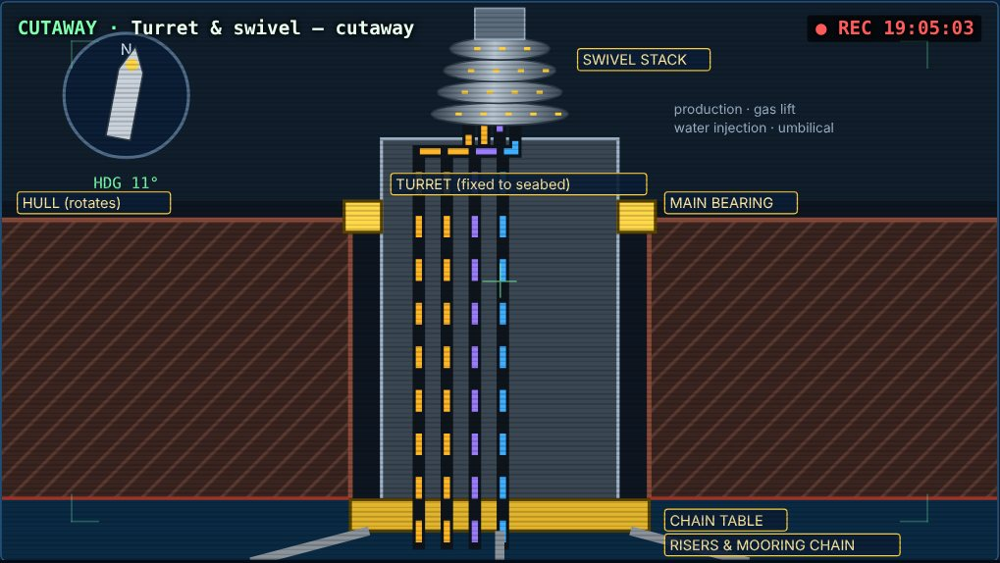
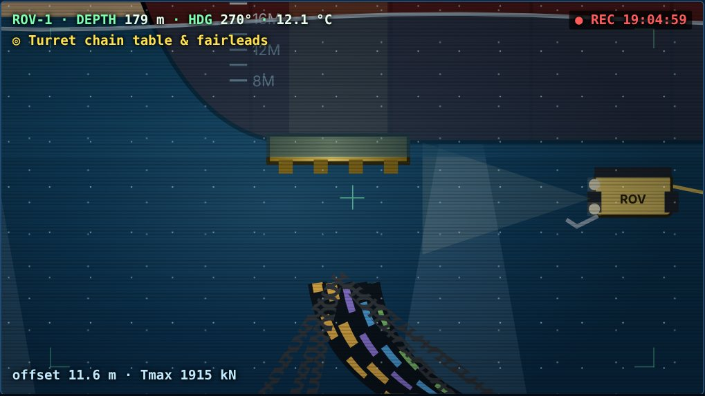
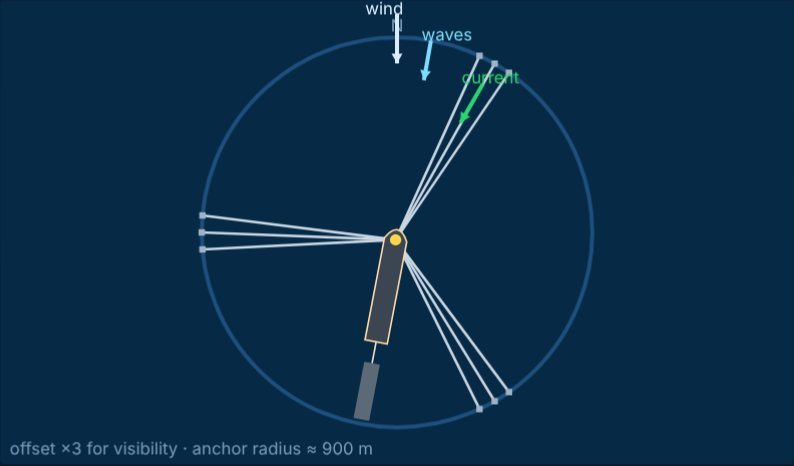
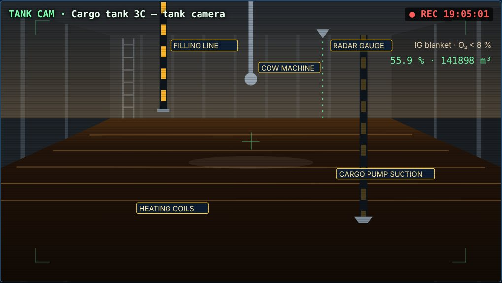
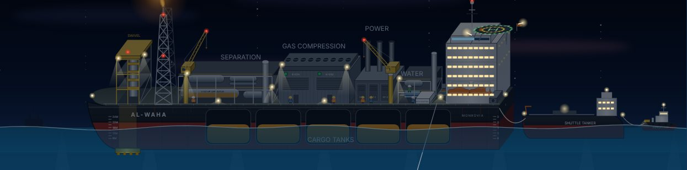
The plant splits the well stream into three products:
The water injection system and the utilities support the process. Equipment is arranged in modules on a pipe rack above the main deck, separated by firewalls. The hazardous process sits away from the accommodation, the lifeboats and the helideck.
تقسم المحطة تيار الآبار إلى ثلاثة منتجات:
يدعم المعالجةَ نظامُ حقن الماء والمرافق. وتُرتَّب المعدات في وحدات (modules) على حامل أنابيب فوق السطح الرئيسي، تفصلها جدران حماية من الحريق. وتكون المعالجة الخطرة بعيدة عن السكن وقوارب النجاة ومهبط المروحيات.
In a 3-phase gravity separator the fluid enters through an inlet device (diverter or vane) that removes momentum. A calming baffle distributes the flow. Gas rises through the mist extractor; oil and water separate by density over the retention time.
Controls:
Oil treatment: heating, an LP separator or degasser, and often an electrostatic coalescer to remove emulsified water. Stabilisation lowers the vapour pressure (RVP/TVP) for safe storage.
Typical crude export specification, set by contract: BS&W ≤ 0.5 % by volume, plus limits on salt content and vapour pressure. Sizing guidance for separators is in API Spec 12J.
في الفاصل الجاذبي ثلاثي الأطوار يدخل المائع عبر جهاز مدخل (diverter أو vane) يكسر زخمه. ثم يوزّع حاجز التهدئة (calming baffle) الجريان. يصعد الغاز عبر مزيل الرذاذ (mist extractor)، وينفصل النفط عن الماء بالكثافة خلال زمن البقاء (retention time).
التحكم:
معالجة النفط: تسخين، وفاصل منخفض الضغط أو مزيل غاز، وغالباً مجمّع كهروستاتيكي (electrostatic coalescer) لإزالة الماء المستحلب. والتثبيت (stabilisation) يخفّض ضغط البخار (RVP/TVP) للتخزين الآمن.
مواصفة التصدير النموذجية، ويحددها العقد: BS&W ≤ 0.5 % حجماً، مع حدود للملوحة وضغط البخار. وإرشادات تحجيم الفواصل في API Spec 12J.
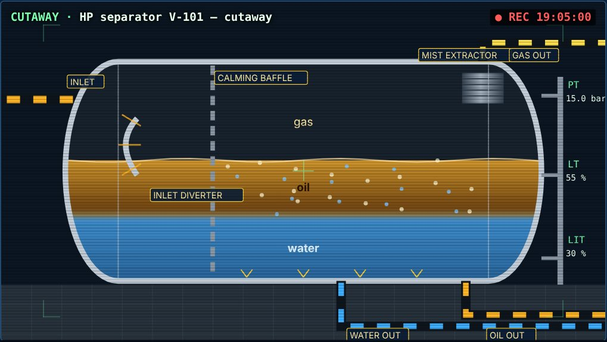
Gas from the separators passes through scrubbers that remove liquid droplets, then to compression trains. These are usually centrifugal, with several stages and intercoolers, and are often configured as 2 × 50 % or 3 × 50 %. An anti-surge recycle valve keeps each compressor away from surge at low flow.
Dehydration with TEG (triethylene glycol) contactors lowers the water dew point, which prevents hydrates and corrosion in export lines and gas-lift systems.
The uses of gas, in priority:
Flaring is a safety system: a continuous purge plus relief from PCVs, PSVs and emergency blowdown. Routine flaring is minimised (e.g. the World Bank's "Zero Routine Flaring by 2030" initiative). Flare gas recovery can capture low-pressure flows.
Model compression (N equal-ratio stages, intercooled, adiabatic): w = N·k/(k−1)·(R·T1/M)·[(r^(1/N))^((k−1)/k) − 1]/η [J/kg], r = Pd/Ps P = w·ṁ, ṁ = Q·ρ_std; N = 3, k = 1.28, T1 = 313 K, M = 19 kg/kmol, η = 0.75, Pd = 180 bar, 2 × 2.4 MSm³/d Allocation: fuel → gas lift → export/reinjection (cap 5 MSm³/d) → excess to flareيمر الغاز من الفواصل عبر الـ scrubbers التي تزيل قطرات السائل، ثم إلى قطارات الضغط. وهي عادةً طاردة مركزية، متعددة المراحل مع مبردات بينية، وغالباً بترتيب 2 × 50 % أو 3 × 50 %. ويُبقي صمام إعادة التدوير المانع للـ surge كل ضاغط بعيداً عن حالة الـ surge عند التدفق المنخفض.
التجفيف بأبراج TEG (ثلاثي إيثيلين جلايكول) يخفض نقطة ندى الماء، فيمنع الهيدرات والتآكل في خطوط التصدير وأنظمة الـ gas lift.
استخدامات الغاز حسب الأولوية:
الشعلة (flare) نظام سلامة: تدفق تنظيف (purge) مستمر، إضافة إلى ما تفرّغه صمامات PCV و PSV والتنفيس الطارئ. ويُقلَّل الحرق الروتيني إلى الحد الأدنى (مثل مبادرة البنك الدولي "Zero Routine Flaring by 2030"). ويمكن لـ استرجاع غاز الشعلة التقاط التدفقات منخفضة الضغط.
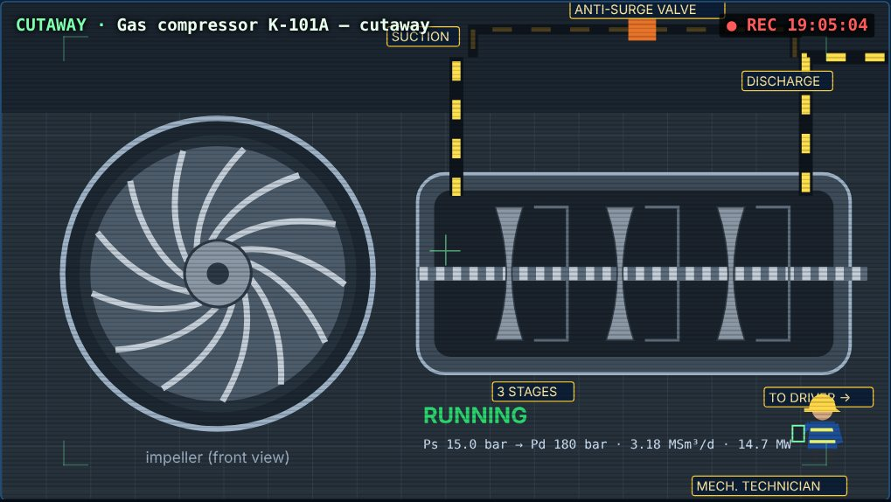
Produced water treatment:
Discharge is regulated. In the North-East Atlantic the OSPAR performance standard is 30 mg/L dispersed oil; other regions set their own limits. Samples are analysed in the laboratory. Oil-in-water rises with hydraulic overload, interface upsets in the separator, and fouling.
Seawater injection maintains reservoir pressure (voidage replacement). The treatment train is:
معالجة الماء المنتج:
التصريف منظَّم. ففي شمال شرق الأطلسي معيار الأداء في OSPAR هو 30 mg/L نفطاً مشتتاً، وللمناطق الأخرى حدودها. وتُحلَّل العينات في المختبر. يرتفع النفط في الماء مع زيادة الحمل الهيدروليكي، واضطراب السطح البيني في الفاصل، والاتساخ.
حقن ماء البحر يحافظ على ضغط المكمن (تعويض الفراغ). وسلسلة المعالجة:
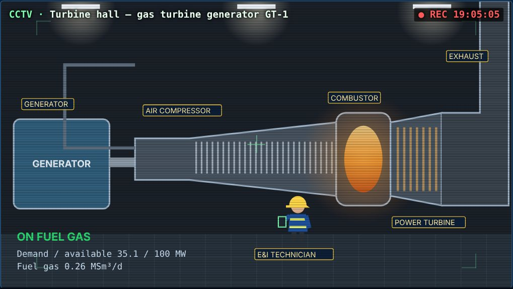
Crude is stored in the cargo tanks until a shuttle tanker arrives. Typical FPSO storage is ≈ 1–2 MMbbl, which covers several days to a few weeks of production. Running out of storage space means production must stop (tank-top), so offloading planning is critical.
يُخزَّن النفط في خزانات الحمولة حتى وصول الناقلة المكوكية. التخزين النموذجي في الـ FPSO ≈ 1–2 مليون برميل، أي ما يغطي أياماً إلى بضعة أسابيع من الإنتاج. نفاد مساحة التخزين يعني إيقاف الإنتاج (tank-top)، لذلك تخطيط التفريغ حاسم.
Layers of protection, from normal to emergency:
ESD levels and their actions vary by operator. Safety analysis of the process follows API RP 14C (ISO 10418). Hazards are identified by HAZOP and quantified by QRA, and many regions require a safety case. Work is controlled by the permit-to-work system with isolations. Helideck operations follow national standards such as CAP 437 in the UK.
طبقات الحماية، من التشغيل العادي إلى الطوارئ:
تختلف مستويات الـ ESD وإجراءاتها حسب المشغّل. ويتبع تحليل سلامة العملية API RP 14C (ISO 10418). وتُحدَّد المخاطر بالـ HAZOP وتُقدَّر كمياً بالـ QRA، وتشترط مناطق كثيرة حالة سلامة (safety case). ويُضبط العمل بنظام تصاريح العمل مع العزل. وتتبع عمليات المهبط معايير وطنية مثل CAP 437 في بريطانيا.
| Tag | Alarm (simulator) | Prio | Condition (model) | ماذا يفعل المشغل |
|---|---|---|---|---|
| ESD / PSD | Emergency / process shutdown | 1 | Operator or trip | تحقق من السبب، ثبّت المنشأة، ثم أعد التشغيل تدريجياً. |
| SEP_LTHH / LL | Separator level high-high / low-low | 1 | LT > 90 % / < 10 % | راجع نقطة ضبط المستوى وصمام النفط؛ خفّض الـ chokes. |
| SEP_PH · PSV | Separator pressure high · PSV lifting | 2/1 | P > Pset + 3 · P > 24 bar | تحقق من الضواغط؛ خفّض الإنتاج. |
| COMP_TRIP · FLARE | Compressor trip · high flaring | 2 | train tripped · flare > 0.5 MSm³/d | أعد تشغيل القطار؛ خفّض الإنتاج حتى ذلك. |
| DIESEL · LOADSHED | Fuel gas short · demand > generation | 2/1 | fuel < need · demand > available | أوقف أحمالاً غير أساسية (مثل الحقن). |
| OIW · BSW | Water / crude off-spec | 2 | OIW > 30 mg/L · BS&W > 0.5 % | نظّف الـ hydrocyclones؛ ثبّت السطح البيني. |
| SLUG · HYD | Riser slugging · hydrate risk | 3/1 | index > 0.25 · T_arr < T_hyd + 3 | ارفع المعدل؛ احقن MEG أو خفّض الضغط. |
| DEAD | Well unable to flow | 3 | open, choke > 5 %, q < 50 | فعّل الـ gas lift. |
| CARGO_H / HH · OFF_DISC | Cargo high / full · emergency disconnect | 2/1 | > 92 % / > 98.5 % · weather/ESD | استدعِ الناقلة؛ خفّض الإنتاج. |
| MOOR_T · MOOR_FAIL · OFFSET | Line tension / failure / vessel offset | 2/1 | > 55 % MBL · line broken · > 4 % WD | راقب الطقس؛ أوقف التفريغ؛ خطط للإصلاح. |
| VRR · PR_LOW | Voidage replacement low · Pr below Pb | 3 | VRR < 0.9 · Pr < Pb | زِد حقن الماء أو إعادة حقن الغاز. |
Crew. An FPSO typically has ≈ 100–150 persons on board (POB), on 12-hour shifts and rotations of 2–3 weeks. Key roles:
Logistics. Crew change is by helicopter. Supply vessels bring stores, chemicals and diesel, and a standby or rescue vessel may be required.
Integrity. Risk-based inspection of the topsides and hull; ROV inspection of risers, mooring and subsea hardware; and corrosion and fatigue monitoring.
الطاقم. على الـ FPSO عادةً ≈ 100–150 شخصاً (POB)، بمناوبات 12 ساعة ودورات 2–3 أسابيع. الأدوار الرئيسية:
الإمداد. يتبدل الطاقم بالمروحية، وتجلب سفن الإمداد المؤن والكيماويات والديزل، وقد تُشترط سفينة احتياط وإنقاذ.
السلامة الإنشائية (integrity). فحص قائم على المخاطر للمنشآت العلوية والبدن، وفحص الـ risers والتثبيت والمعدات تحت البحر بالـ ROV، ومراقبة التآكل والتعب.
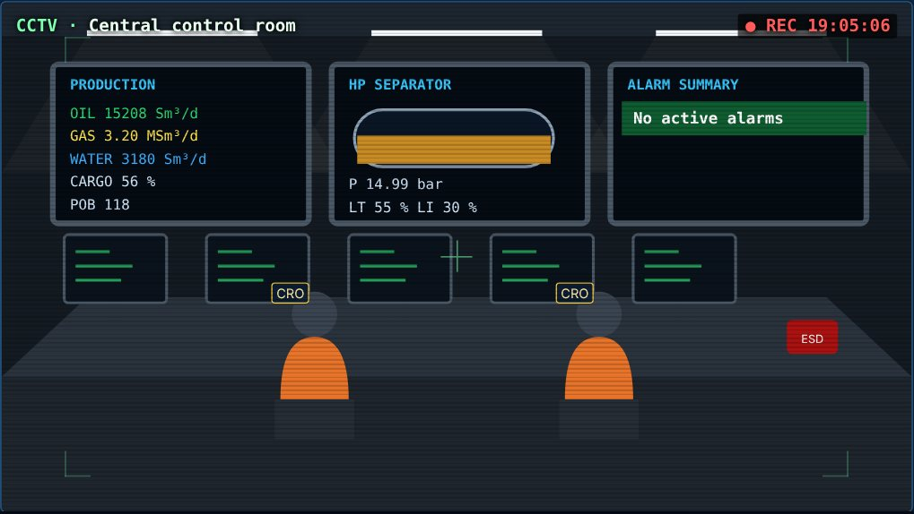
Pressure support and VRR. Producing oil, water and free gas withdraws reservoir volume (voidage). If injection does not replace it, pressure falls. Wells then lose rate, and below Pb free gas forms. The voidage replacement ratio (VRR = injected / produced reservoir volumes) is the key waterflood metric; it is usually kept around 1. The general tool is the material-balance equation of Havlena & Odeh (1963).
Model: V_out = q_o·Bo + q_w + q_o·(GOR − Rs(P))·Bg, V_in = q_wi + q_reinj·Bg (rm³/d) dPr/dt = −(V_out − V_in)/(c_t·V_p), c_t·V_p = 140,000 rm³/bar; VRR = V_in/V_out Rs(P)/Rs(Pb) = [(P/18.2 + 1.4)/(Pb/18.2 + 1.4)]^1.2048 for P < Pb (P in psia; Standing shape)PVT from correlations (Reservoir Fluid card), in field units: p psia, T °F, Rs scf/STB:
Standing: Pb = 18.2·[(Rs/γg)^0.83·10^a − 1.4], a = 0.00091·T − 0.0125·API Rs = γg·[(p/18.2 + 1.4)·10^(0.0125·API − 0.00091·T)]^1.2048 Bo = 0.9759 + 0.00012·[Rs·(γg/γo)^0.5 + 1.25·T]^1.2 Vasquez–Beggs: co = (−1433 + 5·Rs + 17.2·T − 1180·γg + 12.61·API)/(10⁵·p), Bo = Bob·e^(co·(Pb − p)) Beggs–Robinson: μod = 10^x − 1, x = T^−1.163·e^(6.9824 − 0.04658·API); μo = A·μod^B, A = 10.715·(Rs + 100)^−0.515, B = 5.44·(Rs + 150)^−0.338; above Pb: μo = μob·(p/Pb)^m Papay z: z = 1 − 3.53·Ppr/10^(0.9813·Tpr) + 0.274·Ppr²/10^(0.8157·Tpr); Bg = 0.02827·z·T(°R)/pدعم الضغط و VRR. إنتاج النفط والماء والغاز الحر يسحب حجماً من المكمن (voidage). إن لم يعوّضه الحقن ينخفض الضغط، فتفقد الآبار معدلها، وتحت Pb يتكوّن غاز حر. ونسبة تعويض الفراغ (VRR = الحجوم المحقونة ÷ المنتجة بظروف المكمن) هي المقياس الأهم في الغمر المائي، وتُبقى عادةً قرب 1. والأداة العامة هي معادلة موازنة المادة عند Havlena & Odeh (1963).
الـ PVT من الارتباطات (بطاقة مائع المكمن): Standing لـ Pb و Rs و Bo؛ و Vasquez & Beggs لـ co ولزوجة النفط غير المشبع؛ و Beggs & Robinson للزوجة؛ و Papay لمعامل z؛ و Lee و Gonzalez و Eakin للزوجة الغاز. وتُستعمل في نطاق بياناتها، وتقرير PVT المخبري مقدَّم عليها.
تحليل الانخفاض (Arps, 1945). يطابق تاريخ الإنتاج بالمعادلة أدناه، ويتوقع حتى الحد الاقتصادي، ويعطي الاحتياطي المتبقي و EUR. يُطبَّق على فترة انخفاض متجانسة بعد مرحلة الثبات.
البيانات الحقلية. يقرأ المحاكي:
ثم يعاير النموذج على فترة مختارة حتى تطابق معدلات النفط والماء والغاز، بمعامل حجم ونسبة ماء و GOR. هذه مطابقة معدلات لفترة واحدة، وليست مطابقة تاريخية كاملة، والضغوط تقريبية.
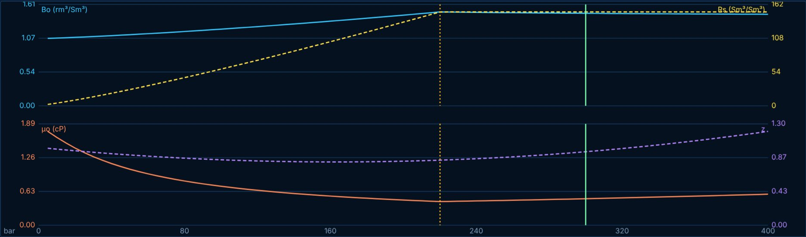
Panels.
Simulation speed goes up to 3600×. Units switch between SI and field, and the language between English and Arabic.
Instructor scenarios:
اللوحات.
سرعة المحاكاة حتى 3600×، والوحدات SI أو حقلية، واللغة عربي أو إنجليزي.
سيناريوهات المدرّب:
| # | Exercise | What to watch | التمرين وما يُلاحظ |
|---|---|---|---|
| 1 | At hot start, record oil, water, gas, Psep, Pman, power and VRR. Explain where each gas stream goes. | Key parameters, gas bars | سجّل قيم الحالة المستقرة واشرح أين يذهب كل تيار غاز. |
| 2 | Close P-1 choke from 75 % to 40 %, then raise P-4 gas lift from 0 to 0.4 MSm³/d. Compare rate gained per MSm³/d of lift gas. | Well cards, trends | قارن أثر الـ choke والـ gas lift على المعدل. |
| 3 | Trip compressor A. Watch Psep and flaring, reduce chokes to limit flaring, restart the train. | Flare, Psep, alarms | توقف ضاغط: الضغط والحرق، ثم أعد التشغيل. |
| 4 | Activate ESD at 3600×. Follow blowdown and cooldown until the hydrate alarm; inject MEG; reset and restart. | Tarr vs Thyd | ESD ثم خطر الهيدرات وحقن MEG وإعادة التشغيل. |
| 5 | Call the shuttle tanker; during offloading raise Hs above 4.5 m. Observe the emergency disconnect. | Tanker state, tug, hose | التفريغ ثم الفصل الطارئ بسبب الموج. |
| 6 | Storm + mooring line failure: compare offset and maximum tension with intact lines; relate to API RP 2SK factors. | Plan view, MOOR alarms | العاصفة وانقطاع الخط: الإزاحة والشدّ. |
| 7 | Shut three wells and leave P-1 at 25 %: observe the slugging index and separator level control. | Slug index, LT | الـ slugging عند المعدل المنخفض. |
| 8 | Run "fast depletion" with and without water injection; compare Pr, VRR and when Pr crosses Pb. | Pr, VRR trends | دور حقن الماء في دعم الضغط. |
| 9 | Load a real Sodir CSV for an FPSO field (e.g. NORNE); calibrate to the peak month; fit Arps after the plateau and report EUR. | Field data card | بيانات حقلية حقيقية: معايرة وتحليل انخفاض. |
| 10 | In the PVT card change API from 25 to 45 at the same GOR: how do Pb, Bo and μo change? Apply and compare production. | PVT curves | أثر نوع النفط على خصائص الـ PVT والإنتاج. |
| Term | Meaning | Term | Meaning |
|---|---|---|---|
| Anti-surge | Recycle control keeping a compressor out of surge · حماية الضاغط من الـ surge | Blowdown | Depressuring inventory to flare · تنفيس المحتوى إلى الشعلة |
| BS&W | Basic sediment and water in crude · الماء والرواسب في النفط | Bubble point (Pb) | Pressure where gas first leaves the oil · نقطة الفقاعة |
| CALM buoy | Catenary anchor leg mooring buoy · عوامة تحميل | CFU | Compact flotation unit · وحدة تعويم مدمجة |
| Choke | Adjustable restriction that sets well rate · خانق التدفق | COW | Crude oil washing of tanks · غسيل الخزانات بالنفط |
| DCS / SIS | Control system / safety instrumented system · نظام التحكم / نظام السلامة الآلي | DP | Dynamic positioning by thrusters · التموضع الديناميكي |
| ESD / PSD | Emergency / process shutdown · إيقاف طارئ / إيقاف عملية | EUR | Estimated ultimate recovery · الاسترداد النهائي المقدّر |
| Fairlead | Guide where a mooring line leaves the vessel · موجّه خط التثبيت | FSO / FLNG | Storage-only unit / floating LNG · وحدة تخزين / تسييل عائمة |
| Gas lift | Gas injected into tubing to lighten the column · الرفع بالغاز | GOR / GLR | Gas-oil / gas-liquid ratio · نسبة الغاز إلى النفط / السائل |
| Hawser | Mooring rope between FPSO and tanker · حبل القطر | HAZOP / QRA | Hazard study / quantified risk assessment · دراسة المخاطر / تقديرها كمياً |
| HLO | Helicopter landing officer · ضابط هبوط المروحيات | Hydrate | Ice-like gas–water solid · هيدرات الغاز |
| Hydrocyclone | Centrifugal oil–water separator · فاصل بالطرد المركزي | IG | Inert gas blanket in cargo tanks · الغاز الخامل |
| IPR | Inflow performance relationship · علاقة أداء التدفق من المكمن | Jumper / PLET | Short connection / pipeline end termination · وصلة / نهاية خط |
| Lazy wave | Riser shape with buoyancy hump · شكل riser بحدبة طفو | LT / LIT | Level / interface level transmitter · مرسل المستوى / السطح البيني |
| Manifold | Subsea structure commingling wells · مجمّع الآبار | MBL | Minimum breaking load of a line · أدنى حمل كسر |
| MEG | Monoethylene glycol hydrate inhibitor · مثبط هيدرات | Moonpool | Vertical opening through the hull · فتحة في البدن |
| OIM | Offshore installation manager · مدير المنشأة البحرية | OIW | Oil-in-water content · النفط في الماء |
| PCV / PSV | Pressure control / safety valve · صمام تحكم / أمان بالضغط | POB | Persons on board · عدد الأشخاص على المتن |
| Riser | Pipe from seabed to vessel · أنبوب صاعد | ROV / TMS / LARS | Remotely operated vehicle / tether system / launch system · مركبة تُشغَّل عن بعد |
| Slugging | Intermittent liquid–gas arrival · وصول متقطع للسائل والغاز | SSIV | Subsea isolation valve · صمام عزل تحت البحر |
| Swivel | Rotating fluid/power transfer in the turret · وصلة دوّارة لنقل الموائع | TEG | Triethylene glycol (gas drying) · تجفيف الغاز |
| TEMPSC | Totally enclosed lifeboat · قارب نجاة مغلق | Turret | Geostationary mooring/riser cylinder · أسطوانة التثبيت الدوّارة |
| Umbilical | Control/chemical/power bundle · حزمة تحكم وكيماويات وطاقة | VRR | Voidage replacement ratio · نسبة تعويض الفراغ |
| Weathervaning | Vessel rotating into the weather · دوران السفينة مع الطقس | WHRU | Waste-heat recovery unit · استرداد الحرارة المهدورة |
| XT (tree) | Subsea Christmas tree on a well · شجرة الصمامات على البئر | Wet / dry tree | Wellhead on seabed / on deck · رأس بئر تحت البحر / على السطح |
Check the current edition of each standard before using it for design.تحقق من الطبعة الحالية لكل معيار قبل استخدامه في التصميم.
© 2026 Waleid (github.com/25im0024-lab) · MIT licence · Training material; not a design document.